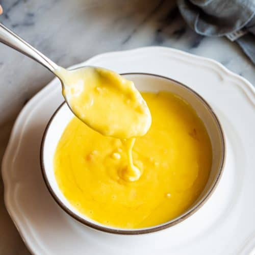

Perfect Buerre-Blanc everytime

Smooth buerre-blanc
Ingredients:
- 1lb cold butter
- 2 shallots
- 4 ounces white wine
- 6 ounces lemon juice
Instructions:
- Finely chop shallots
- add shallots, white wine, and lemon juice to a cold pot
- heat up slowly on low heat, making sure not to boil
- cut cold butter into 16 small cubes
- once shallot/lemon/wine mixture is warm, add one cube of butter
- continuously stir until butter is incorporated
- continue adding in butter one cube at a time and emulsifying until no butter remains
- remove from heat, serve